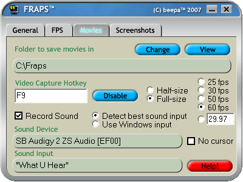

Dans ce mini-tutoriel vous apprendrez à créer une vidéo de votre jeu favori et à la publier sur le Web !
Une vidéo de vous accumulant des frags dans un jeu vidéo
Une vidéo de vous montrant une astuce dans un jeu vidéo
Une vidéo quelconque, n'ayant peut-être aucun rapport avec le jeu vidéo
Par contre, Fraps ne reconnaît pas tous les jeux au monde ! Il faut savoir que Fraps ne voit que les flux DirectX et OpenGL. On peut voir cela si on regarde bien les caractéristiques de notre jeu (voir la pochette ou informez-vous sur le net)
Nous allons commencer par télécharger le programme Fraps qui consiste à enregistrer ce que vous faites à l'écran, seulement quand vous le désirez et quand un jeu est lancé. Il supporte par exemple World Of Warcraft, Trackmania Sunrise, Far Cry, mais également d'autres, comme Counter-Strike (1.6, Condition Zero, Source).
Vous pouvez visiter le site officiel de Fraps pour avoir plus d'informations : http://www.fraps.com.
Supporte les processeurs récents (Pentium 3 et supérieur).
L'enregistrement vidéo est plus rapide avec des cartes graphiques récentes, comme NVIDIA GeForce ou ATI Radeon.
Installation
Après avoir téléchargé Fraps, grâce au lien ci-dessus, exécutez le programme setup.exe qui a été téléchargé, dont vous aurez, au préalable, défini l'emplacement. Ensuite, installez-le !
Une fois installé, une nouvelle icône apparaîtra sur votre bureau sous le nom de Fraps. Double-cliquez dessus !
Configuration
C'est ici que vous allez configurer le programme selon vos préférences. Nous allons tout simplement suivre les onglets et leur contenu de gauche à droite.
Onglet General
Dans cet onglet vous avez des cases à cocher selon vos préférences, telles que :
démarrer Fraps dans la barre des tâches (près de l'horloge Windows) ;
la fenêtre de Fraps (exemple ci-dessus) est toujours au-dessus des autres applications ;
toujours ouvrir Fraps en même temps que Windows.
Onglet FPS
Dans cet onglet, vous allez définir les options pour les FPS (Frames per second / Images par seconde) :
Overlay Display Hotkey : définit la touche du clavier qui sera utilisée pour changer l'emplacement de l'affichage des FPS dans les coins de votre écran ;
Benchmarking Hotkey : définit la touche du clavier qui sera utilisée pour afficher le test de FPS (de 1 à votre capacité) ;
[Dessin] Overlay Corner : définit l'emplacement d'origine pour l'affichage des FPS, et sous le dessin. Le bouton Disabled permet de retirer l'option de l'affichage par défaut des FPS dans les coins de l'écran.
Au niveau des cases à cocher, de haut en bas... :
affiche la mise à jour des FPS seulement à chaque seconde ;
arrête le benchmark (test) automatiquement après [x] secondes ;
les 3 dernières cases servent à sauvegarder les statistiques du benchmark (test) : #1. le plus petit et le plus gros FPS atteint, #2. les détails des FPS, #3. les images par seconde. Bref, des statistiques qui servent à ralentir la capture de la vidéo (ne cochez pas ces options si vous n'en voyez pas l'utilité).
Onglet Movies [Important]

Dans cet onglet nous allons définir les options pour l'enregistrement des vidéos.
La première option est le dossier où seront sauvegardées les vidéos : cliquez sur le bouton Change pour changer le dossier de sauvegarde et sur le bouton View pour voir où se situe le répertoire actuel.
Video Capture Hotkey : définit la touche du clavier qui sera utilisée pour commencer l'enregistrement d'une vidéo de 20 secondes. Elle servira aussi à arrêter l'enregistrement.
À la droite de l'option de la touche d'enregistrement, vous pouvez choisir la grosseur de capture. Si vous enregistrez en Half-size / 50 % de la grandeur totale, ou en Full-size / la grandeur totale, 100 %.
À droite de celle-ci, vous pouvez sélectionner entre 1 et 4 choix que vous pouvez définir. C'est-à-dire l'option qui définira le nombre d'images par seconde. Prenez entre 30 à 50 fps, 30 est un bon nombre.
Les options ci-dessous serviront à configurer l'audio durant la vidéo :
la case à cocher Record Sound doit rester cochée si vous voulez enregistrer le son présent dans votre jeu ;
à droite de la précédente, vous pouvez décider que Fraps détecte la meilleure configuration audio / Detect best sound input, ou qu'il utilise la configuration audio de Windows / Use Windows input ; Sound Device et Sound Input vous montrent ce que vous possédez comme configuration audio ;
puis il y a en haut du bouton Help!, une case à cocher qui permet de faire disparaître le curseur de la souris.
Onglet Screenshots
Dans cet onglet vous pouvez paramétrer les options de screenshots (des images), si vous désirez en prendre :
la première option est le dossier où seront sauvegardés les screenshots : cliquez sur le bouton Change pour changer le dossier de sauvegarde, et sur le bouton View pour voir où se situe le répertoire actuel ;
Screen Capture Hotkey : définit la touche du clavier qui sera utilisée pour la capture d'image ;
à droite de l'option précédente, vous pouvez définir le format de l'image soit : BMP, JPG, PNG ou TGA (ils sont classés par ordre d'utilisation préférentielle, quoique TGA se révèle peu utilisé pour cette option) ;
la première case à cocher sert à inclure le nombre de FPS sur chaque image lors de la capture ;
la dernière case à cocher sert à prendre une capture d'image toutes les [x] secondes (sans avoir besoin d'appuyer sur la touche du clavier configurée).
Configuration de l'audio dans le Panneau de configuration
Allez tout d'abord dans les propriétés de sons de Windows :
cliquez sur l'icône de volume dans la barre des tâches, près de l'horloge de Windows ;
ou bien allez dans démarrer de Windows, puis, dans le Panneau de configuration. Ensuite, allez dans les Sons et périphériques audio et finalement, cliquez sur le bouton Paramètres avancés....
Ensuite, vous devez changer le périphérique de mixage ! Comment ? Bien, faites ceci (toujours dans la fenêtre du contrôle du Volume principal de votre ordinateur) :
Options ;
Propriétés ;
cliquez sur la liste déroulante et choisissez l'option Line in/Mic inou cliquez sur le bouton de l'option Enregistrement ;
Ok.
Maintenant, assurez-vous que l'option Muet de Mixage Stereo soit décochée et que Muet de Microphonecochée, si vous ne voulez pas entendre votre voix dans votre microphone (si vous en possédez un).
Appliquez les modifications comme ci-dessous :
Il se pourrait que votre son ne soit paramétrable que par un programme comme RealTek. Alors, vu les différentes versions de programmes, vous devriez chercher dans votre programme Mixage stéréo et Microphone. Peut-être comme dans mon cas, dans l'onglet Mixeur de votre programme RealTek ?
Avant de démarrer votre jeu, assurez-vous que Fraps est actif dans la barre des tâches (icône : écran noir avec un 99 jaune dans le coin gauche). Exemple :
Pour activer Fraps, ouvrez-le avec le raccourci sur votre bureau ou dans les programmes du menu démarrer de Windows. Puis en haut de la fenêtre de Fraps, cliquez sur le bouton Réduire. Exemple :
Si Fraps est bien actif lors du démarrage de votre jeu, vous devriez voir des chiffres dans un coin de l'écran (si vous n'avez pas désactivé l'option de l'affichage des FPS dans les configurations de Fraps). Cela vous aidera à savoir si Fraps est actif ou non.
Si vous avez désactivé les FPS ou si vous ne voyez pas de chiffres, appuyez sur F12 (par défaut) qui définit une nouvelle position d'écran aux FPS. Appuyez plus d'une fois ! Vu que quand vous appuyez sur la touche, les chiffres se déplacent dans les quatre coins. Puis, la cinquième fois que vous appuyez sur la touche, les FPS se désactivent. Alors, il faut compter 5 fois.
À partir de là, vous pouvez enregistrer votre vidéo avec la touche du clavier configurée dans Fraps, par défaut : F9. Puis appuyez à nouveau sur votre touche d'enregistrement une fois la sélection vidéo terminée !
Si vous voulez avoir plus de 20 secondes, il vous suffit d'appuyer une nouvelle fois sur votre touche d'enregistrement. Voici un autre avantage d'avoir précédemment enregistré une démo avec la commande de votre jeu, puisque vous pouvez la mettre en pause dans l'espace séparant les deux vidéos.
Exemple sous Counter-Strike : Condition Zero (même effet sous Counter-Strike 1.6, le seul autre jeu que j'ai testé) :
Vous allez maintenant récupérer les vidéos que vous avez créées, quand vous avez capturé des scènes de vous jouant à votre jeu. Pour cela, dirigez-vous dans le répertoire que vous avez configuré pour sauvegarder les vidéos de Fraps.
Par défaut, le répertoire est : C:\Fraps.
Visionnez vos vidéos Fraps
Allez dans votre répertoire et prenez les vidéos que vous avez tournées. Pas nécessairement toutes les vidéos, regardez-les un peu chacune pour savoir lesquelles vous voulez garder pour le montage final. Placez les vidéos qui vous plaisent dans un nouveau répertoire, comme par exemple sur votre bureau, vu qu'une fois votre montage final terminé, il ne servira à rien de garder vos séquences (à moins d'une sauvegarde).
Voici des exemples d'un nom de fichier vidéo Fraps (sous Counter-Strike) :
hl 2007-11-14 22-29-17-11.avi
hl 2007-11-14 22-29-30-72.avi
hl 2007-11-14 22-43-52-24.avi
Bref, toutes les vidéos sont sous le format AVI.
AVI ? ... Téléchargez les codecs !
Si vous n'avez pas les codecs pour voir les vidéos AVI sous Windows Media Player (par exemple), téléchargez ceci :
Si vous installez DivX seulement pour les codecs, comme suggéré, et non pour le lecteur vu que Windows Media Player prendra les codecs de DivX comme acquis, alors le lecteur DivX ne servira à rien. Vous devrez configurer l'installation de DivX comme cela (en décochant tout sauf la première option).
Exécutez le programme de montage vidéo
Maintenant, allez chercher Windows Movie Maker dans :
menu démarrer ;
Programmes / Tous les programmes ;
Accessoires ;
Windows Movie Maker.
Si le raccourci du programme n'est plus là (parce qu'il s'installe avec toutes les versions de Windows XP), vous devrez aller le chercher dans : C:\Program Files\Movie Maker\moviemk.exe.
Windows Movie Maker
Insérer des vidéos
Une fois le programme Windows Movie Maker démarré, faites Ctrl + I ou : Fichier > Importer dans les collections...
Une fenêtre d'exploration apparaît à l'écran ; allez maintenant ouvrir votre dossier avec vos séquences vidéos de Fraps pré-choisies. Puis sélectionnez toutes vos vidéos d'un seul coup en faisant une sélection glissée avec votre souris. Terminez en cliquant sur Importer.
Par la suite, le programme importera les vidéos. Veuillez attendre que la barre de progression disparaisse.
Une fois la barre de progression disparue, cliquez sur le bouton Collections pour voir les vidéos que vous avez importées. Chaque collection possède le nom de la vidéo qu'elle contient.
Voici ce que vous devriez voir à l'écran :
Notez bien la flèche sur l'image, c'est de cette façon que vous ajouterez les vidéos dans la séquence de montage (chronologie). Vous arriverez à créer votre montage vidéo en exécutant à nouveau cette manipulation pour vos autres vidéos qui se trouvent dans les collections de la colonne de gauche du programme.
Insérer de la musique
Vous avez peut-être remarqué dans l'image précédente qu'il y avait sous la barre de chronologie un endroit pour insérer de l'audio. Eh bien ce n'est pas sorcier ! Pour insérer du son, il suffit de faire la même manipulation que pour les vidéos, excepté que vous devrez placer votre musique dans la barre de chronologie de l'audio.
Votre montage est terminé ?
Vérifiez si votre vidéo ne dépasse pas 10 minutes, sinon vous ne pourrez pas la publier sur certains sites du Web, ou vous serez forcés de la couper en morceaux. Regardez sur la ligne symbolisant la durée de la section chronologie de Windows Movie Maker pour savoir combien de temps dure votre vidéo.
N'oubliez pas de sauvegarder votre projet, avant de fermer le programme, de sorte que vous puissiez y retoucher : Fichier > Enregistrer le projet (Ctrl + S).
Enregistrez votre montage vidéo
Pour enregistrer votre montage, faites ces manipulations :
Ctrl+P ou Fichier > Enregistrer le fichier vidéo... ;
dans la nouvelle fenêtre, choisissez l'option Poste de Travail et cliquez sur Suivant ;
dans #1, écrivez le nom que vous désirez donner à votre nouveau montage vidéo ;
dans #2, laissez comme ceci et poursuivez. (Notez que votre vidéo sera sauvegardée dans Mes Documents > Mes Vidéos.)
Nous sommes maintenant à l'option de l'encodage de votre vidéo.
Cliquez sur : Afficher plus de choix...
Notez en bas de la fenêtre les dimensions de la vidéo et la qualité. Voici les quatre critères les plus importants à retenir : 1. Vitesse de transmission (recommandée : 340 Kbits/s à 1 Mbits/s) 2. Taille de l'affichage (recommandée : 320x240 - 640x480) 3. Nombre d'images par seconde (recommandé : 30) 4. Espace requis estimé (recommandé : 100 Mbits/s)
Vous allez maintenant configurer les dernières options de cette fenêtre.
Choisissez l'option : Autres paramètres.
Sélectionnez un encodage selon la vitesse de transmission entre 340 Kbits/s et 1 Mbits/s, écrit entre parenthèses () dans chaque titre de sorte d'encodage.
Cliquez sur Suivant.
Il ne vous reste plus qu'à patienter durant la création de votre montage vidéo en fichier WMV. Les formats WMV, Windows Media Video, sont prévus pour être lus par défaut dans le programme Windows Media Player.
Ne vous inquiétez pas ! Même ceux ne possédant pas Windows Media Player pourront voir votre vidéo de deux façons. En ayant les codecs vidéo requis ou tout simplement en voyant votre vidéo sur un site d'hébergement vidéos tels que : DailyMotion.com, YouTube.com, etc.
Alors, publiez votre vidéo sur le web dès maintenant...
Gardez le lien de votre vidéo et transmettez-la à vos amis ! ;)
{kind=link}
{kind=link}
{kind=link}
{kind=link}
{kind=link}
{kind=link}